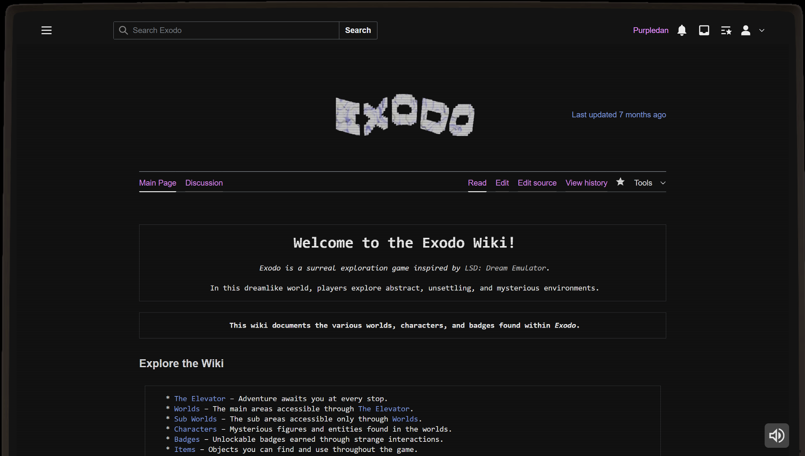
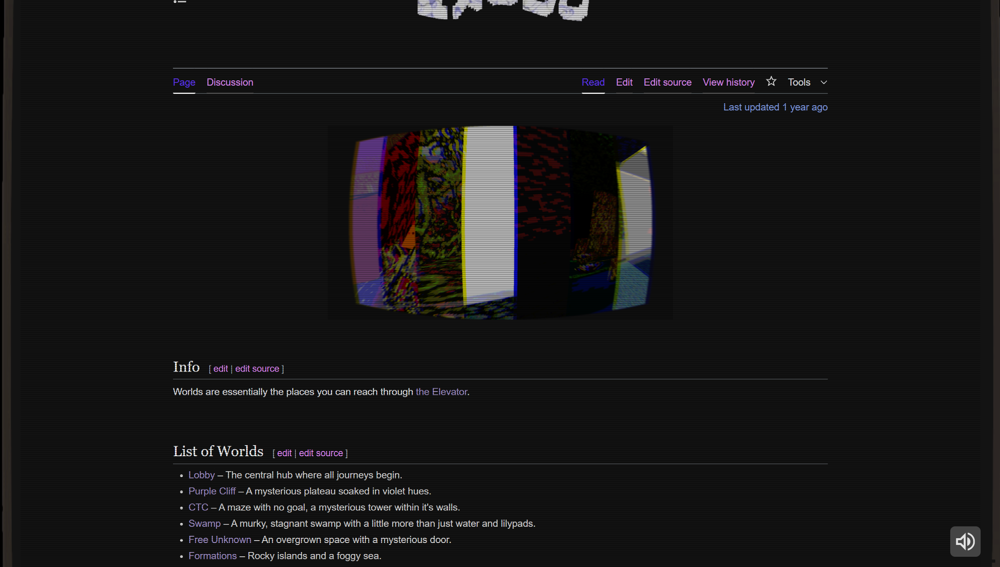
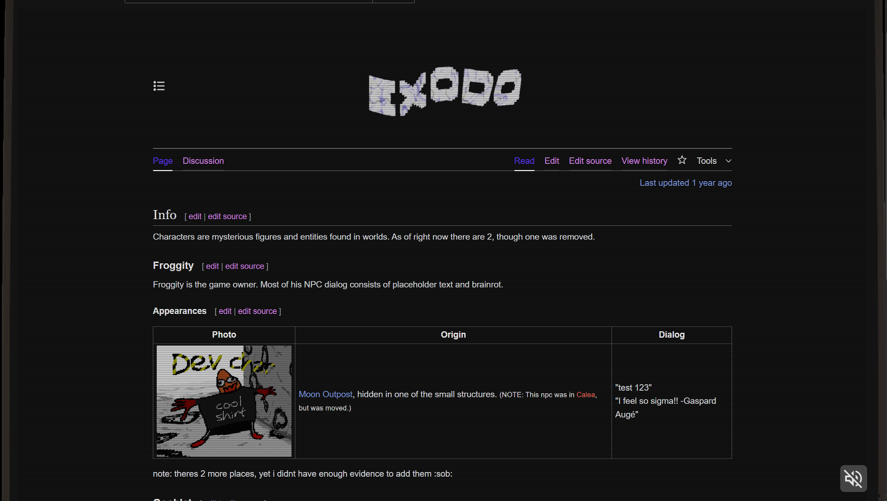

Exodo Wiki
A wiki for the Roblox game Exodo. I worked on its layout, styling, and reusable page templates.
Pages and walkthrough



Overview
A wiki I helped to code and customize for the Roblox game Exodo. I worked on the front-end layout, styling, and template design to make the wiki easy to navigate and visually consistent with the game's branding.
My contribution
- Customized the wiki theme and CSS to match the Exodo game aesthetic
- Built reusable page templates for items, NPCs, and game mechanics
- Collaborated with the community to organize and structure content